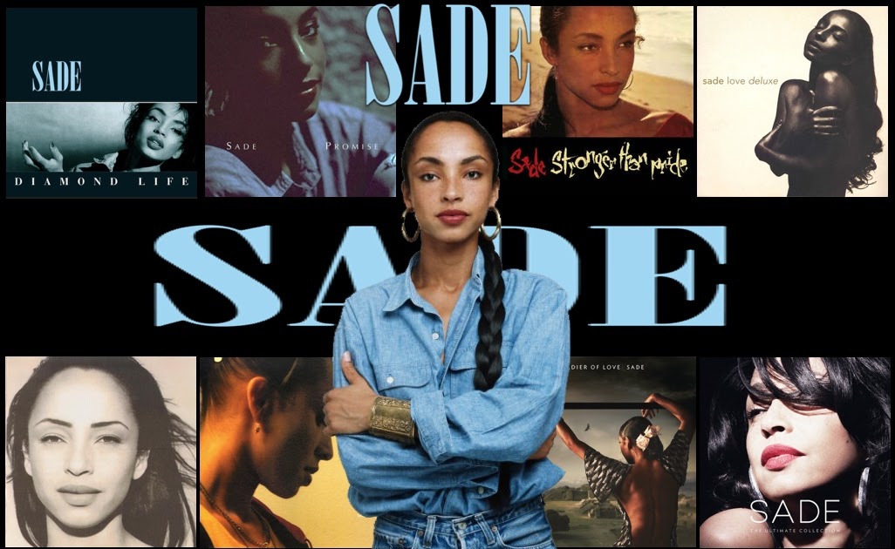
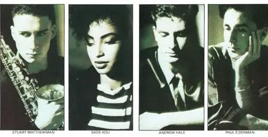
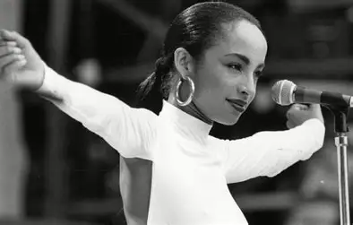
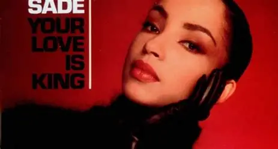
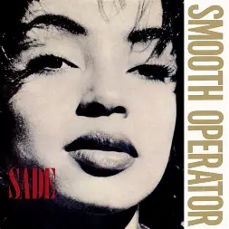
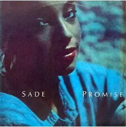

SADE
Um tributo à SADE, um projeto dedicado a homenagear sua memória e legado.

Biografia

A banda Sade foi formada em 1982, quando os membros de uma banda de soul latim Pride (Sade Adu, Stuart Matthewman, e Paul Spencer Denman, juntamente com Paul Anthony Cook) formaram um grupo e começaram a escrever seu próprio material. Em 1983, Andrew Hale entrou na banda, e Paul Cook deixou em 1984. A banda Sade, foi nomeada em homenagem a vocalista. Eles fizeram sua estreia em dezembro de 1982, no Ronnie Scott's Club, em Londres, com a banda Pride.

A banda fez seu primeiro show nos Estados Unidos, na Danceteria Club, em Nova York. Sade recebeu mais atenção da mídia e das gravadoras do que o Pride, e se separaram. Em 18 de outubro de 1983, a banda assinou com a CBS Records, que foi absorvida por sua gravadora controladora, Epic Records, em 1986.[11] Quando a banda estava prestes a ser lançada nos EUA, a equipe de marketing da gravadora, divulgou o nome Sade para as rádios e a mídia, pronunciando "Shar-day", o que levou a erros de pronúncia da mídia, durante todo a divulgação do primeiro álbum da banda na América do Norte.

Em 25 de fevereiro de 1984, Sade lançou seu primeiro single "Your Love Is King". Seu álbum de estreia "Diamond Life", foi lançado em 16 de julho de 1984 no Reino Unido,[14] onde chegou ao 2º lugar, e mais tarde recebeu quatro certificados de platina pelo BPI. Após o lançamento, a banda embarcou em sua primeira grande turnê pelo Reino Unido. Em 8 de dezembro de 1984, a banda lançou seu primeiro single nos Estados Unidos "Hang on to Your Love".

Em 1985, Sade ganhou um Brit Awards de "Melhor Álbum". Um terceiro single foi lançado, "Smooth Operator", que alavancou a carreira de Sade no mundo todo. O videoclipe da música, foi indicado a dois MTV Video Music Awards de 1985, nas categorias de "Melhor Vídeo Feminino" E "Melhor Artista Revelação". Em 13 de julho de 1985, Sade se apresentou no Live Aid no Wembley Stadium, em Londres. Sade Adu se tornou a única artista descendente de africanos a aparecer em frente ao auditório de 75.000 pessoas, e uma audiência televisiva estimada mundial de 1,4 bilhões, em 170 países.[15] "Diamond Life" vendeu mais de 12 milhões de cópias em todo o mundo, tornando-se o álbum de estreia mais vendido de uma vocalista britânica, um recorde que durou 24 anos.[16]

Em 4 de novembro de 1985, Sade lançou o segundo álbum "Promise" no Reino Unido[17] (lançado em os em 21 de dezembro de 1985 nos EUA). O álbum atingiu o nº 1 no Reino Unido, e nos EUA, e recebeu certificado de platina duplo no Reino Unido, e platina quádrupla nos EUA. Em 1986, Sade ganhou seu primeiro Grammy Awards de "Melhor Artista Revelação". No mesmo ano, a banda fez sua primeira turnê mundial para promover o álbum Promise. Aumentando a banda estavam Dave Early (bateria), Martin Ditcham (percussão), Gordon Matthewman (trompete), Jake Jacas (trombone e backing vocals), Leroy Osbourne (vocais) e Gordon Hunte (guitarra). Em 28 de Junho de 1986, a banda se apresentou no Artists Against Apartheid Concert no Festival da Liberdade em Clapham Common, em Londres.

Em 5 de abril de 1988, Sade lançou seu terceiro álbum "Stronger Than Pride", no Reino Unido[18] (nos EUA lançado em 4 de junho de 1988). O álbum chegou ao nº 3, no Reino Unido e recebeu certificado platina pelo BPI. Ele foi precedido pelo single "Paradise", que entrou no Top 30 do Reino Unido (e no Top 20 os EUA). A banda excursionou por todo o mundo novamente, junto com Blair Cunningham (bateria), Ditcham Martin (percussão), Leroy Osbourne (vocal), Gordon Hunte (guitarra), James McMillan (trompete) e Jake Jacas (trombone e voz).
Em 1989, Sade Adu foi indicado a um American Music Awards na categoria de "Melhor Cantora Feminina de Soul/ R&B".
"A música é a minha vida, e eu não posso imaginar minha vida sem ela. É a minha maneira de expressar minhas emoções."
Membros da Banda
- Sade Adu – vocal principal (1982–presente)
- Andrew Hale – teclados, piano (1982-presente)
- Stuart Matthewman – saxofone, guitarra (1982–presente)
Ex Membros do Grupo
- Paul Anthony Cooke – bateria (1982–1984)
- Dave Early - bateria (1984–1985, falecido em 1996[34]).
Curiosidades
- O nome da banda é uma homenagem à vocalista Sade Adu.
- A banda recebeu nove indicações ao Grammy e venceu quatro prêmios, incluindo "Melhor Artista Revelação" em 1986.
- Sade lançou mais de 40 álbuns de estúdio, incluindo "Diamond Life" (1984), "Promise" (1985), "Stronger Than Pride" (1987), "Love Deluxe" (1992), "Soldier of Love" (2010).
- Sade lançou uma música inédita após seis anos, "Young lion", em 2024, e não lançou mais músicas inéditas desde 2018.
- Sade é uma das artistas mais reservadas e reverenciadas da música internacional, com uma carreira marcada por discrição, perfeccionismo e atemporalidade sonora.
"I won't pretend That I intend to stop living I won't pretend I'm good at forgiving But I can't hate you Though I have tried"